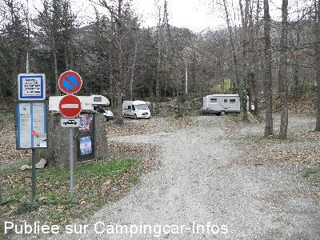
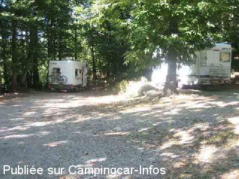
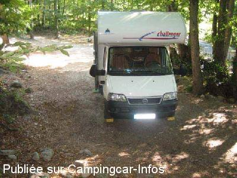

APCC = parkings réservés camping-cars sans services de :
CASTEIL
(N° 542)
Accès/adresse :
Las Ascloses D116
66820 CASTEIL
66820 CASTEIL
Latitude : (Nord) 42.53331° Décimaux ou 42° 31′ 59′′
Longitude : (Est) 2.39206° Décimaux ou 2° 23′ 31′′
Tarif : Gratuit
Services :

Autres informations :
Parking ombragé
Le village est à 2 mn
Point de départ pour Saint-Martin du Canigou

Le 02/01/2014 par DIDI 31

Le 03/09/2008 par José

Le 03/09/2008 par José
de
Dany
le 14/03/2014 :
Pour info : face à l'entrée du parc animalier parking gratuit aussi pour c.car sans services. Possibilité de passer la nuit. Tranquille.
Pour info : face à l'entrée du parc animalier parking gratuit aussi pour c.car sans services. Possibilité de passer la nuit. Tranquille.
de
gekko
le 17/02/2010 :
Aire toujours gratuite et réservée aux CC, ombragée et calme. En dehors de l'hiver (Gel), on peut trouver un peu d'eau aux WC public, mais restons dicrets et économes, sinon ?
Aire toujours gratuite et réservée aux CC, ombragée et calme. En dehors de l'hiver (Gel), on peut trouver un peu d'eau aux WC public, mais restons dicrets et économes, sinon ?
de
pierre
le 27/07/2009 :
Présents les 4 et 5/07, parking calme, wc publics à proximité. Parking très ombragé ... surtout les jours d'orage, un élagage serait le bienvenu.
Présents les 4 et 5/07, parking calme, wc publics à proximité. Parking très ombragé ... surtout les jours d'orage, un élagage serait le bienvenu.
de
José
le 09/08/2008 :
Bonjour. Magnifique parking réservé aux CC, très calme. Parfait pour la visite de l'Abbaye de Saint-Martin du Canigou à pied ou en 4x4. Mais c'est tellement plus beau à pied. On peut monter par la petite route, interdite aux véhicules sauf les taxis 4x4 et redescendre par le petit chemin qui part derrière l'abbaye (fléché) superbe. Merci à la municipalité!
Bonjour. Magnifique parking réservé aux CC, très calme. Parfait pour la visite de l'Abbaye de Saint-Martin du Canigou à pied ou en 4x4. Mais c'est tellement plus beau à pied. On peut monter par la petite route, interdite aux véhicules sauf les taxis 4x4 et redescendre par le petit chemin qui part derrière l'abbaye (fléché) superbe. Merci à la municipalité!